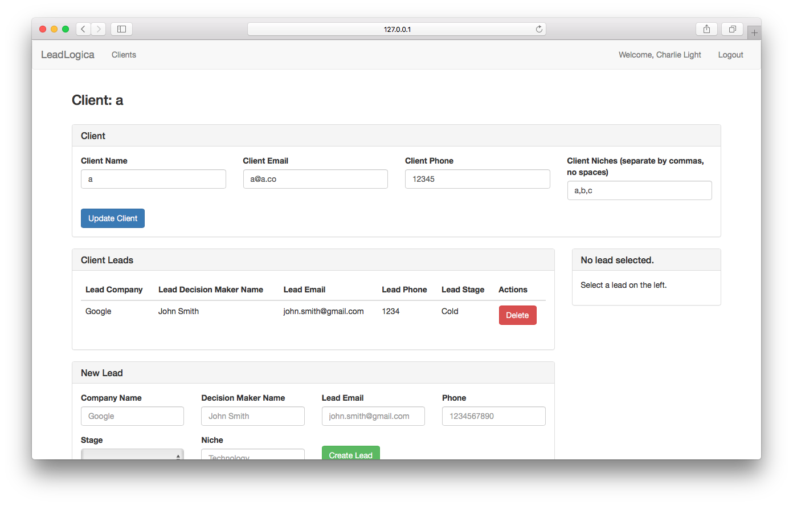
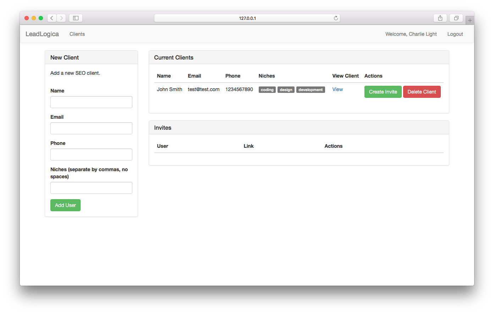
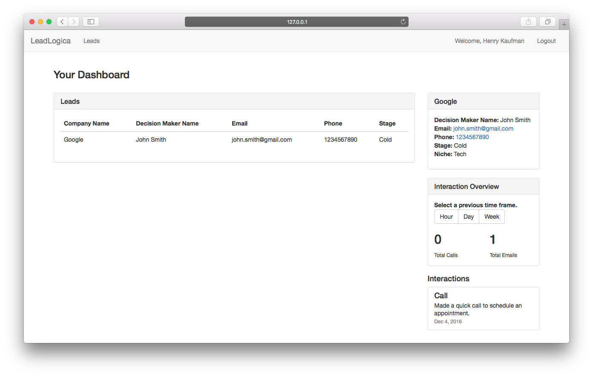
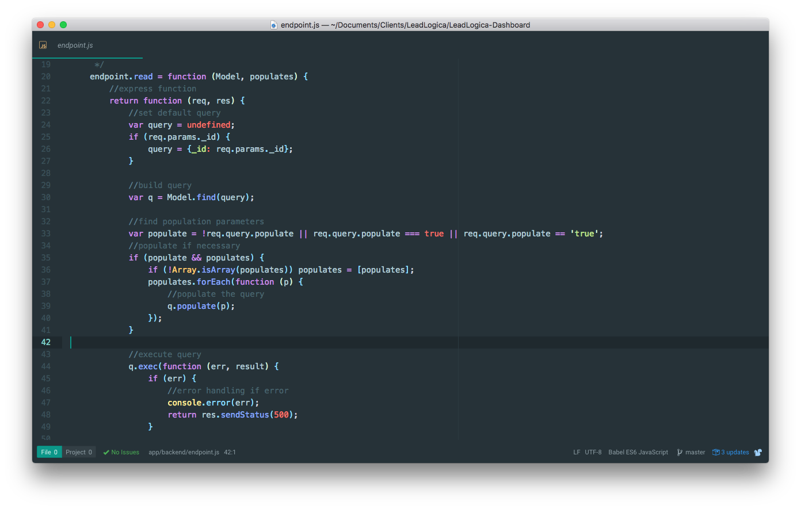
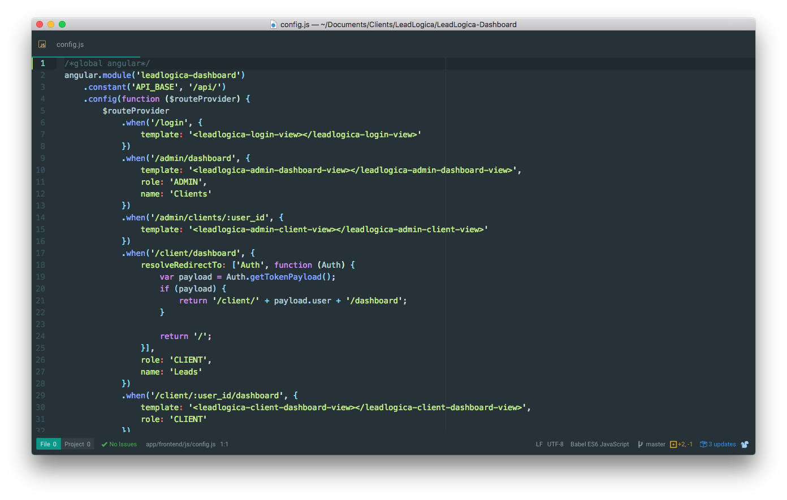
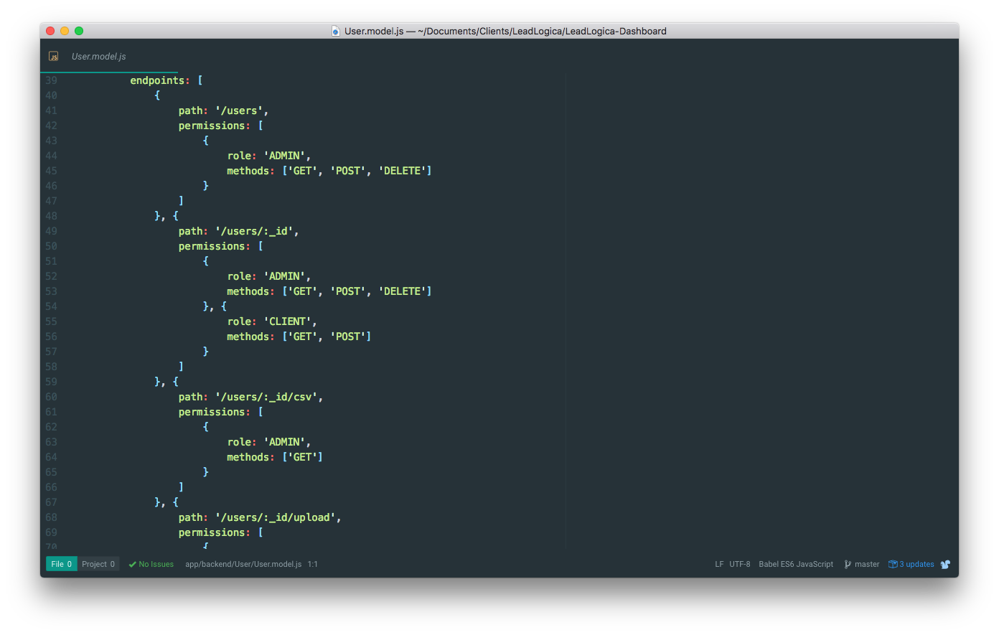

LeadLogica
Helping companies sell more SEO.
ABSTRACT
LeadLogica is a company that deals withand helps other SEO agencies find leads for their companies. They work closely with many other companies across the United States by generating qualified leads for their businesses.
INTRODUCTION
In early November 2016, Charlie from LeadLogica approached me with an issue of organizing their leads. They were finding leads for many of their leads in a clean fashion, however they had no where to store this data in an accessible fashion. After a long night of brainstorming, wireframing, and whiteboarding, they soon realized that the best way to solve the problem was to create a custom CRM where they can add clients, have their clients log in, and have the ability to create leads with different fields for their customers.
DESIGN
Unfortunately, the constraints for the project were large. There was a fast approaching deadline, and the budget was tight. The design was partially overlooking, despite an argument on the importance of it, so I was forced to use the Bootstrap framework. Luckily, the project was going to continue, so I knew that I would be able to improve the design in the future.
I wanted to be as focused as possible with the design, despite the limitations and restraints of the project.

Client dashboard for an admin
Having a design that was easy to use was not only important, but critical. The admin needed to be able to log in
and quickly view their users and immediately update their information, if necessary. The admin also needed a
way to quickly invite users onto the platform. Once users signed up for the dashboard, clients could then
view their leads and what interactions have occurred.

All clients view for an admin

Client dashboard
DEVELOPMENT
The development for the project focused on a highly modular structure. The code was written so that endpoints
could be reused no matter what model was being used (lead, client, interaction, etc). When developing, I try to
focus on creating the most modular, recyclable schemas for
development. Not only does reusable code help with performance, but it also allows better readability later on.
The backend was written with Node, Express,
and MongoDB and the frontend
was written with Angular. I chose the MEAN stack for the project mainly
because of my previous experience working with it. I had worked on many projects previously with it, and I was
comfortable with creating fast, responsive applications with it.

Endpoint for all routes
The frontend was designed for speed, so it was built with the latest technologies and philosophies in mind. The
internet is moving more towards a web component architecture where every part of a website is broken up into a
small, reusable component. Here's an example: you're browsing Twitter, but instead of having to recreate a new
item for each tweet, you can create a "tweet" component that you can reuse for each tweet.

Frontend configuration for routes
Authentication for this application was interesting. There were two layers to the app: an admin layer and a
client layer. The role that the user has when created determines the correct routes they are able to access. On
the backend, an authentication model was put in place that set up endpoints for each role.

Endpoints for authentication
CONCLUSION
LeadLogica is one of the smaller projects I've worked on, but it was still very interesting to be able to work closely with the team and understand their business more. I learned a lot about some of the technology that can be used to automate the closing process for a lead. This project is still in the works and I'm looking forward to working more with company and adding more onto this case study as the product further evolves.